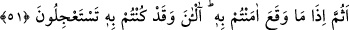
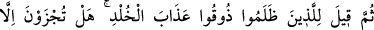
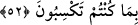

ve inkarı pekiştirmek içindir. Çünkü suçluya yaraşan, acele azap istemek bir tarafa, azâb
geleceği için korkudan ödü patlamaktır.
51. “Olan olduktan sonra mı ona inanacaksınız? Şimdi mi? Halbuki onu acele
istiyordunuz!”
“Olan olduktan sonra mı ona inanacaksınız?” Yani onlara de ki: Azap gerçekten
olduktan, başınıza geldikten ve artık inanma şansınız kalmadıktan sonra mı ona
inanacaksınız?
“Şimdi mi?” Bu söz, Hz. Peygamber’e telkin edilen soruya dâhil olmayıp Allah
Teâlâ’nın yeni başlayan bir sözüdür. Azap geldikten sonra inandıkları zaman bu
gecikmeyi kötülemek için onlara: “Şimdi mi inandınız?” denilir.
“Halbuki onu” yalanlayıp onunla alay ederek “acele istiyordunuz!”
52. Sonra zulmedenlere: “Sürekli azâbı tadın” denilir. Sadece kazandığınız
şeylerden başkasının karşılığını mı bulacaksınız?”
“Sonra zulmedenlere:” yani yalanlamayı tasdikin yerine, inkârı da îmânın yerine
koyanlara: “Sürekli” ebedî ve devamlı olan “azabı tadın.” denilir.” Çünkü onlara
kabirlerinde azâb edilir. Sonra da cehenneme götürülürler, orada ise ebedî bir şekilde
azap görürler.
Kötü sözler yok olup gitti ve canını kurtardın zannetme
Onların hesabı kiramen kâtibinin yanındadır
Bugün “sadece” dünyada “kazandığınız” inkar ve mâsiyet gibi “şeylerden
başkasının karşılığını mı bulacaksınız?” yani başkasının karşılığını bulmazsınız. Bu
ifadede azâbın Cenab-ı Hak’tan kaynaklanmadığına dikkat çekilmektedir. Çünkü O,
kullarını ancak onlara rahmet etmek, acımak için yaratmıştır. Zehir içmenin tabiî
neticesi helâk olduğu gibi bunların azâbı da sebepsiz yere Allah’tan değil kendi bâtıl
amellerinden ileri gelmiştir.
Su kabarcığı gibi niçin başkasından şikayet edeyim
Hânemin devamlı harap olması kendi hevâmdandır